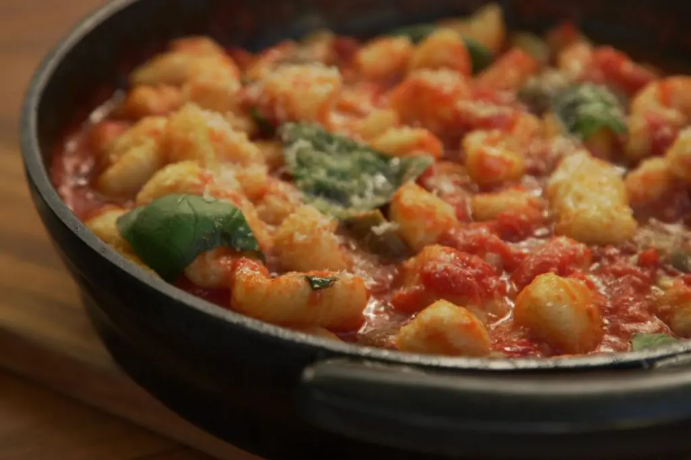

Aprende a preparar esta receta de Ñoquis de Papa con Salsa Pomodoro, por
Julieta Oriolo en elGourmet
Ñoquis / 40 mins

Receta
Hervir las papas con piel en abundante agua salada.
Pelar, pisar y formar una corona.
Añadir en el centro un huevo, salar, agregar nuez moscada, queso
rallado y mezclar.
Añadir harina 0000 y mezclar.
Amasar suavemente hasta hidratar la harina evitando agregar de más.
Dejar descansar tapada unos 10 minutos.
Poner a hervir abundante agua con sal.
Formar rollitos con la masa, porcionar, pasar por tenedor y llevar a
hervor inmediatamente.
Calentar la salsa pomodoro, añadir aceitunas negras y mozzarella.
Cuando la salsa esté caliente llevar los ñoquis hervidos, mezclar y
dejar cocinar un minuto más.
Terminar con queso rallado e hilos de aceite de oliva.